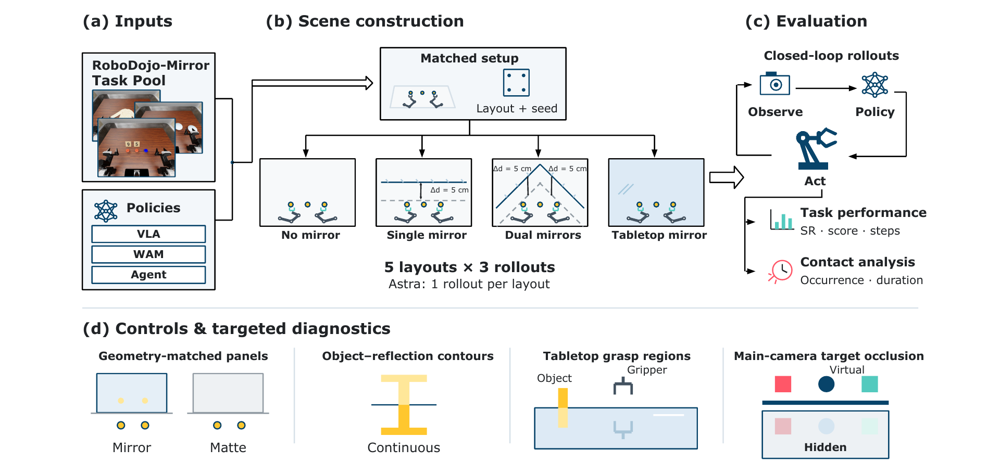
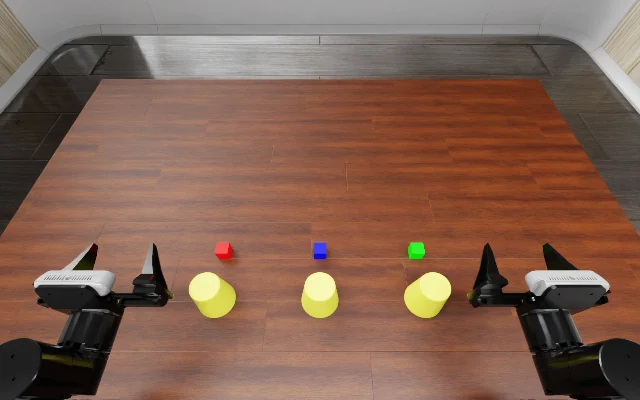
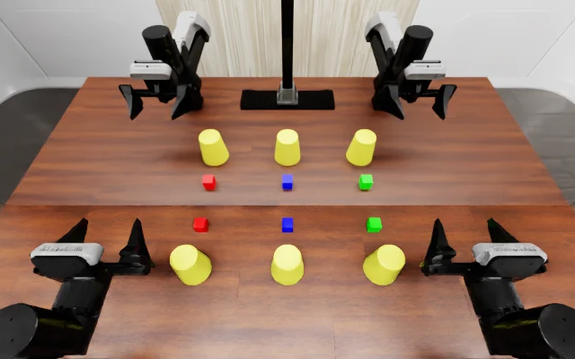
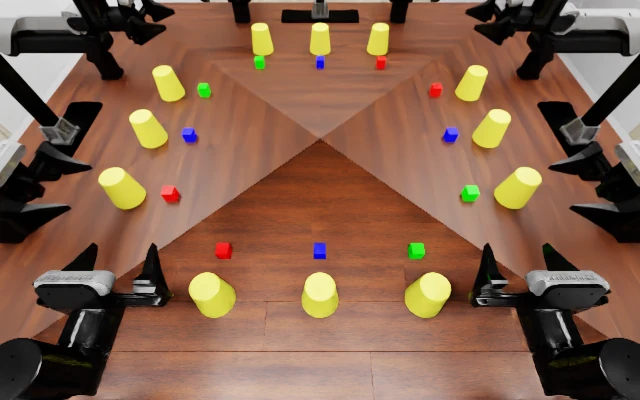
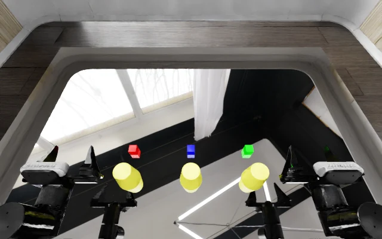

Abstract
Can a simple mirror expose the limitations of today's robotic manipulation policies? Inspired by the mirror self-recognition test in animal cognition, we investigate whether robot policies can reliably manipulate physical objects in scenes containing their reflections. We introduce RoboDojo-Mirror, a benchmark built on RoboDojo that preserves task objectives, success criteria, and policy checkpoints while comparing a mirror-free baseline with single-mirror, dual-mirror, and mirrored-tabletop conditions.
Across five policies spanning Vision-Language-Action models, World Action Models, and agentic policies, every mirror condition reduces aggregate success rates: averaged over the three conditions, the drop ranges from 10.8 to 56.7 percentage points across policies, and it reaches 62.5 points on the mirrored tabletop. Because a mirror is also a physical obstacle, we compare it against geometrically matched non-reflective panels; 50–88% of mirror-specific failures occur without recorded robot–panel contact, so direct collisions alone do not explain the degradation.
Trajectory and contact analyses instead reveal recurring behaviors consistent with phantom targeting of reflected objects and spatial mislocalization of real ones. Targeted diagnostics further characterize grasping near reflections, policy-dependent pushing progress, and physical-target interaction under main-camera occlusion. Real-robot experiments with π0.5 and FastWAM also show lower overall success rates under the upright-mirror and mirrored-tabletop conditions. These findings reveal a shared vulnerability to reflective environments across diverse robot policies and motivate reflection-aware evaluation of embodied intelligence.
Project video
Benchmark design
For each RoboDojo task, we build four scenes from matched initial layouts. For each policy, we pair layouts and policy seeds across the four conditions, run closed-loop rollouts, and use the original RoboDojo evaluator to score the rollouts.

- Match starting states
- Within each policy and task, pair layouts and policy seeds across conditions. Keep the task instructions and native evaluation rules.
- Vary the scene
- Compare no mirror, one vertical mirror, two perpendicular mirrors and a reflective tabletop. WALL-OSS and Awomo also use geometry-matched nonreflective panels.
- Score each run
- Use five layouts per task and three runs per layout for each open-weight policy. Astra uses one run per layout. Macro-average task success and scores across eight tasks.
Eight tasks, four scenes




Benchmark results
Five policies evaluated on the same eight tasks. Each policy is compared with its own no-mirror baseline.
Scroll to see all scene conditions.
| Policy | No mirror | Single mirror | Dual mirrors | Mirrored tabletop | Mean drop |
|---|---|---|---|---|---|
| WALL-OSS | 67.5 | 21.7 | 15.0 | 25.0 | 46.9 |
| VPP2 | 72.5 | 33.3 | 35.0 | 27.5 | 40.6 |
| Awomo-0.5 | 60.8 | 15.8 | 6.7 | 10.0 | 50.0 |
| Rex-M1 Preview | 66.7 | 15.8 | 10.0 | 4.2 | 56.7 |
| GPT-6-Astra | 65.0 | 62.5 | 52.5 | 47.5 | 10.8 |
Success rates are percentages. Mean drop is the average decrease across the three mirror conditions, in percentage points.
Diagnostic examples
Recorded examples of how policies behave around mirrors.
Mirror versus panel
WALL-OSS general pickup from the paper evaluation. Dual mirrors are on the left, geometry-matched panels on the right. Both views were rendered from recorded states.
Target occlusion
The main view shows reflections of the occluded targets. Astra’s wrist views on the right show which physical targets remain directly visible.
Push-T
VPP2 pushes an I-shaped object beside a vertical mirror. The real and reflected contours are separated in this diagnostic setup.
Tube grasping on a mirrored tabletop
Matched VPP2 tube-insertion runs on the original tabletop (left) and mirrored tabletop (right). The lower row shows the right wrist during grasping.
Citation
@article{liu-zhang-mirror-test,
title = {{Embodied AI Fails the Mirror Test: How a Simple Mirror Breaks Robot Policies}},
author = {Liu, Xuanchen and Zhang, Hejun and Dong, Boxuan and Wu, Ying
and Li, Heshuai and Gao, Wen and Tian, Yonghong and Yu, Weihao},
journal = {arXiv preprint arXiv:2611.33010},
year = {2026}
}